O Início da Lenda
Yusuke Urameshi era um delinquente juvenil até o dia em que morreu em um ato de altruísmo. Surpreendendo até o Mundo Espiritual, ele ganha uma segunda chance na vida, mas com uma condição: tornar-se um Detetive Espiritual. A partir daí, Yusuke, junto de seus aliados Kuwabara, Kurama e Hiei, enfrenta demônios, monstros e participa de torneios mortais para proteger o Mundo dos Homens.
Protagonistas

Yusuke Urameshi
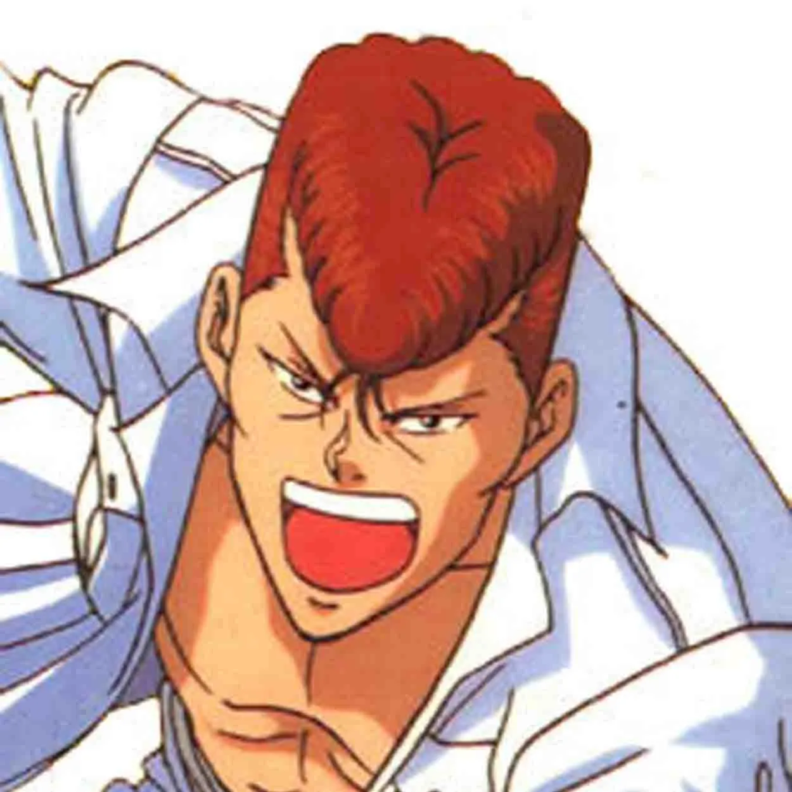
Kazuma Kuwabara
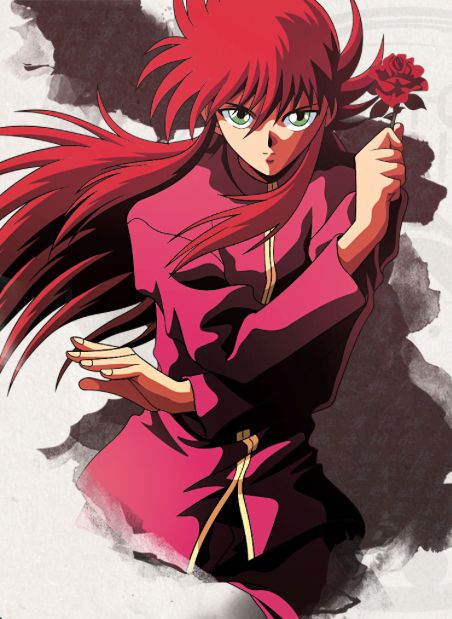
Kurama
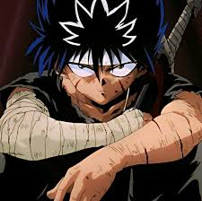
Hiei
As Grandes Sagas
- Detetive Espiritual: A introdução de Yusuke ao mundo sobrenatural e suas primeiras missões.
- Torneio das Trevas: A equipe Urameshi enfrenta os times mais mortais do Mundo das Trevas pela sobrevivência.
- Saga do Capítulo Negro: A ascensão de Shinobu Sensui, um ex-detetive espiritual com um plano para destruir a humanidade.
- Saga dos Três Reis: Yusuke viaja ao Makai (Mundo dos Demônios) para encontrar suas raízes e lutar pelo trono.
Galeria
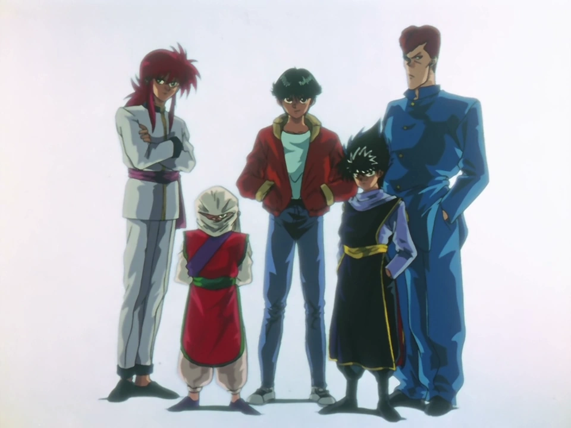
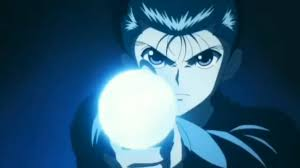
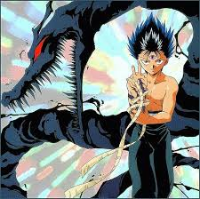
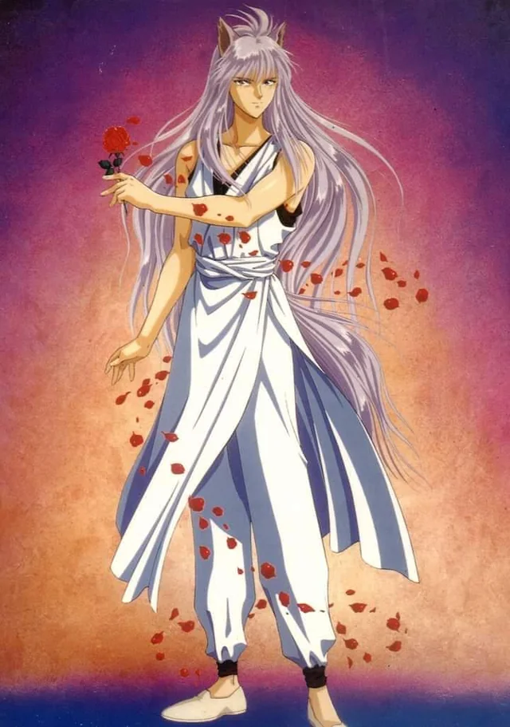
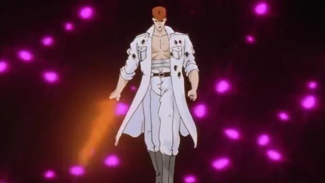
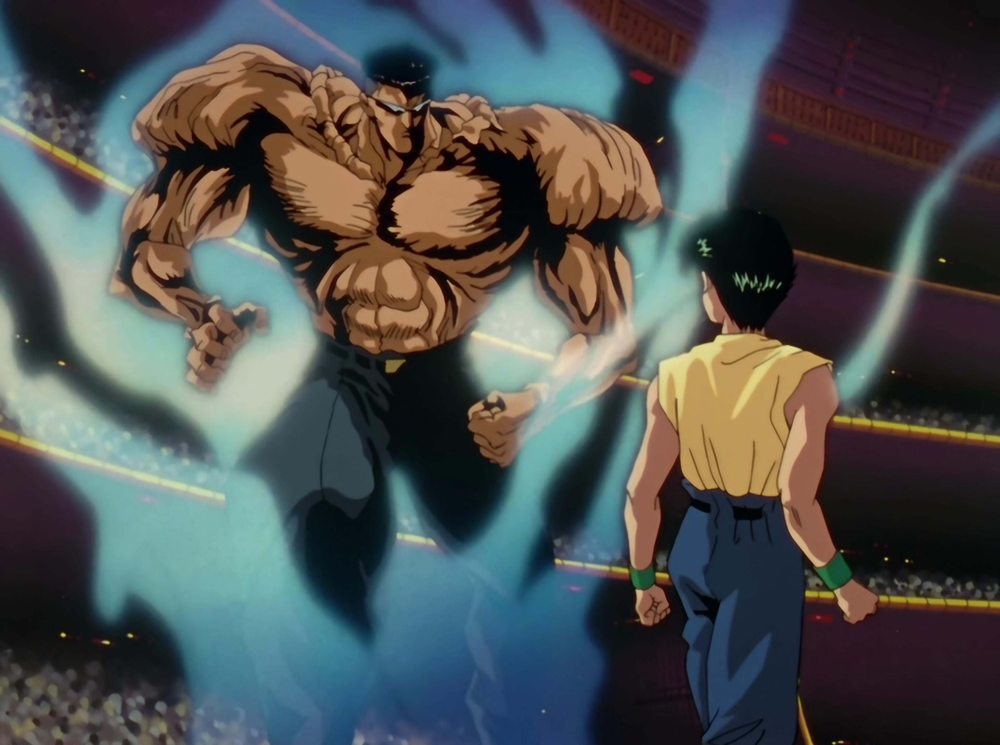
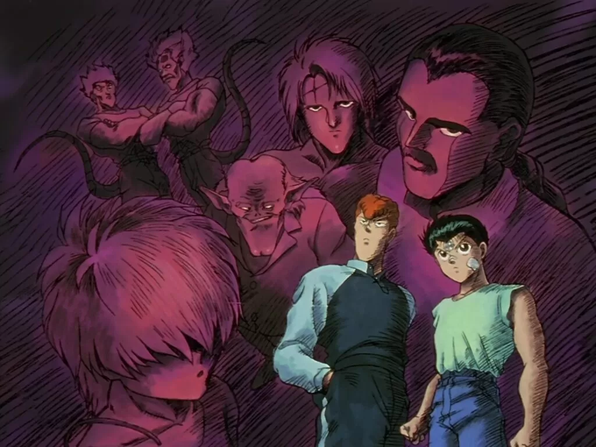
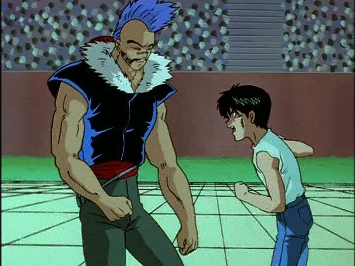